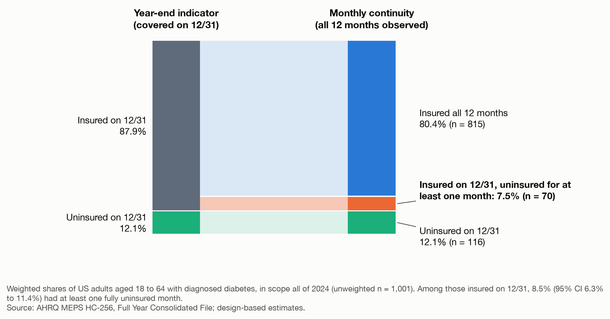
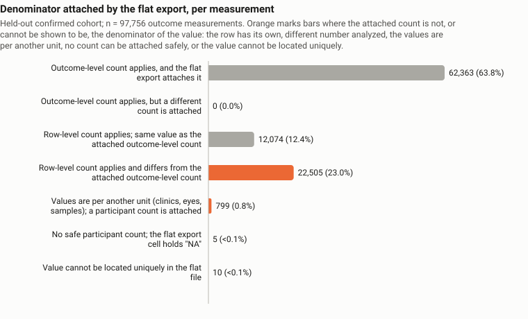
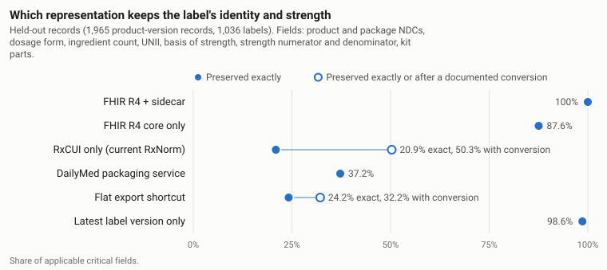
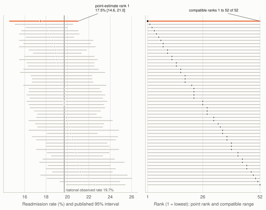
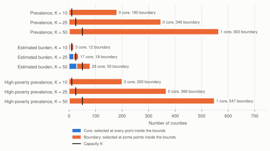

Research projects
I designed and conducted these ten health data studies at Norlowe Research. Each one includes the findings, methods, full report and code.

01Insurance continuity
A survey analysis of monthly insurance coverage, prescription use and spending in adults with diabetes, showing that year-end coverage misses gaps earlier in the year.

02Trial results audit
A PostgreSQL warehouse of 2,469 clinical trials and an audit of 1,961, tracing which participant count belongs with each reported result.

03Evidence model audit
A benchmark of small local language models on 1,209 clinical trial questions, testing whether a real quote means a correct answer.

04Diabetes definition audit
A survey-weighted comparison of HbA1c and fasting glucose definitions of diabetes in NHANES, with a checker for mismatched denominators.

05Medication identity
A pipeline from DailyMed labels to FHIR medication records, tested for information loss and terminology mismatches.

06Prescribing suppression
An audit of Medicare Part D prescribing data showing how suppressed records affect drug totals and state comparisons.

07Hospital comparability
An interactive check of CMS heart-failure hospital rankings that tests comparability and shows the uncertainty behind each ordering.

08Diabetes outreach priorities
A county planning analysis comparing diabetes outreach priorities based on prevalence, estimated burden and poverty.

09Adverse event robustness
An analysis of FDA adverse-event reports showing how case definitions and processing choices change reported associations.

10Retraction-aware evidence
An audit of 1,000 systematic reviews, linking references to retraction, correction and expression-of-concern records.
Animesh Bose